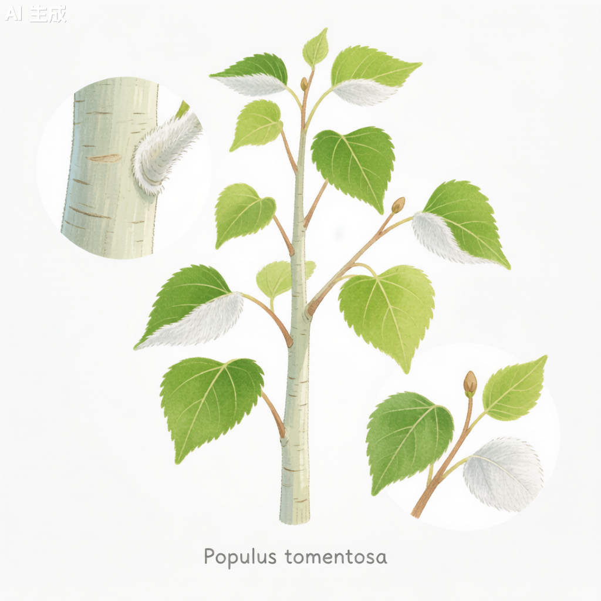

毛白杨 Populus tomentosa

形态特征
毛白杨（Populus tomentosa）为落叶大乔木，高25–30米，可达40米，胸径可达1米以上。树干通直，树皮幼时灰绿色，平滑，老时灰褐色，纵裂。芽卵形，有短柔毛。叶互生，长枝叶片卵形或三角状卵形，长10–15厘米，宽8–12厘米，先端渐尖，基部心形或截形，边缘有波状齿。短枝叶片较小，卵形或卵状三角形。叶背面密被灰白色绒毛，是其最显著的鉴别特征。叶柄长2–5厘米。葇荑花序，雌雄异株，先叶开放。雄花序长10–15厘米，花药红色。雌花序长4–7厘米。蒴果卵圆形，2瓣裂。花期3月，果期4–5月。
分布与生境
毛白杨为中国特有树种，主产于华北平原，以黄河中下游地区最为集中。垂直分布可达海拔1,800米。喜光、深根性，喜温暖湿润气候，在年均温7–16℃、年降水量500–900毫米的地区生长良好。对土壤要求不严，以深厚肥沃的微酸性冲积土最为适宜，也能在轻度盐碱土（含盐量0.3%以下）上生长。
分类学
毛白杨为杨柳科（Salicaceae）杨属（Populus）植物。种加词"tomentosa"意为"被绒毛的"，特指其叶背面密被白色绒毛。杨属全球约100种，分布于北温带。毛白杨是杨属白杨组（Sect. Populus）的重要物种，与新疆杨（P. alba var. pyramidalis）和银白杨（P. alba）有较近的亲缘关系。毛白杨易与银白杨区别——银白杨叶下面绒毛为银白色，叶形多变异。
生态习性
毛白杨为强阳性树种，不耐荫蔽。深根性，主根不发达，但侧根和水平根极为发达，向四周伸展可达10–20米。生长速度极快，是杨属中生长最快的物种之一，10年生树高可达15–20米，胸径20–30厘米。寿命中等，通常50–80年。喜湿润但不耐积水，在地下水位2–3米的冲积土上生长最佳。毛白杨春季产生大量杨絮（种子上的绒毛），是其繁殖方式的一部分，但也成为城市环境中的"飞絮"问题。
利用与文化
毛白杨是中国北方最重要的速生用材树种之一，被誉为"北方之剑"。木材材质轻软，纹理直，色泽白，易于加工，可用于造纸、人造板、家具、包装箱、一次性筷子等。毛白杨是华北平原农田防护林带的主栽树种，形成庞大的"绿色长城"，对防风固沙、保持水土有重要贡献。在城市绿化中，毛白杨因其生长快、树形挺拔、叶大荫浓而被广泛用作行道树。春季"杨絮纷飞"虽带来环境困扰，但也是华北平原独特的季节景观。
参考文献
- 《中国植物志》第20卷: 9页. 科学出版社.
- 赵永彬等. 2000. 毛白杨种质资源与育种. 北京林业大学学报.
- 朱之悌等. 1995. 毛白杨遗传改良研究. 林业科学.